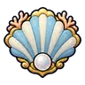

โกเลมปะการัง
มอนธาตุน้ำ Lv 86–92
เจอที่
| แมพ | โซน | Lv | ภูมิภาค |
|---|---|---|---|
| แนวหินโสโครก | 86–92 | ที่ราบสูง | |
| แนวหินโสโครก | หินโสโครกใหญ่ | 91–92 | ที่ราบสูง |
ค่าสถานะตามเลเวล
| Lv | HP | ATK | DEF | MDEF | EXP | Job |
|---|---|---|---|---|---|---|
| 86 | 74,384 | 181–272 | 52 | 15 | 113 | 85 |
| 89 | 82,350 | 190–283 | 53 | 16 | 117 | 88 |
| 92 | 90,326 | 199–299 | 55 | 17 | 121 | 91 |
ตีด้วยธาตุไหนดี
แรงขึ้น: ลม ×1.75
เบาลง: ไฟ ×0.5 น้ำ ×0.25
วัตถุดิบที่ดรอป
| ของ | โอกาส | |
|---|---|---|
| ก้อนปะการังสีชมพู | 55% | 1 ชิ้น (15% ได้ 2) |
อุปกรณ์ที่ดรอป (2)
| ของ | โอกาส |
|---|---|
| 0.12% | |
 โล่หอยมุกทะเลหมอก | 0.06% |
สกิล
ร่างแข็ง (Lv 25+) · ร่างแข็ง (Lv 60+) · ทุบพื้น (Lv 60+)